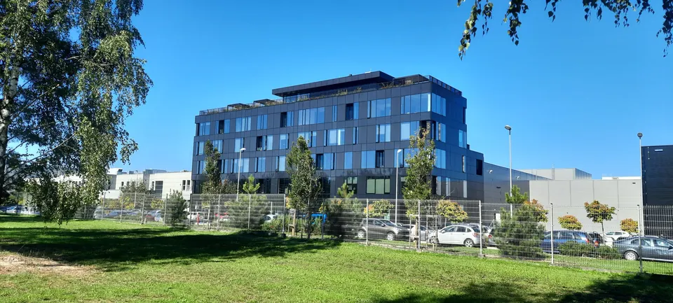

Realizacje
Obiekty, które stoją.


Zdjęcia budynków mieszkaniowych w przygotowaniu.
Pracownia architektoniczna · Lublin · od 1997

Pracujemy od 1997 roku, samodzielnie od listopada 1998. Projektujemy obiekty użyteczności publicznej, budynki mieszkaniowe i przemysłowe, od koncepcji po projekt wykonawczy.
Przy każdym projekcie współpracujemy ze stałymi zespołami konstruktorów, instalatorów, elektryków i teletechników. Zależy nam na długiej współpracy z lokalnymi firmami: poznajemy ich działalność i projektujemy to, czego naprawdę potrzebują.
Projektowaliśmy m.in. dla: Transhurt (Galeria Olimp), Drukarnia DAKO, Galeria Venus.